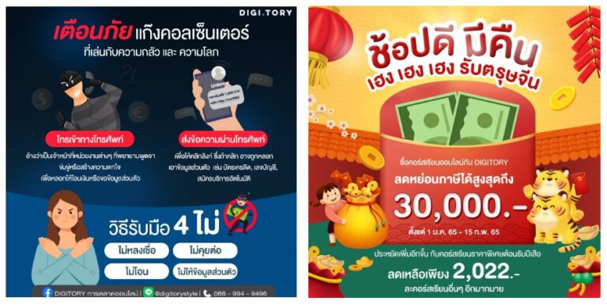

6. นักสร้างคอนเทนต์ (Content Creator)

คอนเทนต์ครีเอเตอร์ ( Content Creator ) หรือ นักสร้างคอนเทนต์ เป็นเสมือนผู้สร้างสรรค์คอนเทนต์บนสื่อให้ตรงกับเป้าหมายของผู้ชมหรือลูกค้า ซึ่งคอนเทนต์ครีเอเตอร์เป็นอีกหนึ่งสายงานที่เป็นที่นิยมในปัจจุบันนี้ ทุก ๆ คนสามารถเป็นเริ่มเป็นคอนเทนต์ครีเอเตอร์ได้เพียงแค่ศึกษาแพลตฟอร์ม Social Media มากขึ้น ทั้งสื่อออนไลน์ และออฟไลน์ ซึ่งคอนเทนต์ที่ประสบความสำเร็จนั้นวัดผลได้จากยอด Engagement, View หรือ Search Engine ขึ้นอยู่กับประเภทและเรื่องราวของคอนเทนต์นั้น ๆ ว่าตรงความต้องการของผู้เสพหรือไม่ คอนเทนต์ที่ดีต้องมีการวางแผนไอเดีย การสร้างสรรค์คำ และการคิดนอกกรอบ คอนเทนต์ที่ได้รับความนิยมมาก ๆ คือ Real Time Content เป็นการเล่าเรื่องที่อยู่ในกระแสสังคม เมื่อนำมาประกอบรวมกับสินค้าที่ต้องการขาย จะทำให้ภาพลักษณ์ของแบรนด์เกิดความน่าสนใจ และดึงดูดผู้คนให้มาติดตามมากขึ้น โดยประเภทของคอนเทนต์สามารถแบ่งได้หลากหลายตามแพลตฟอร์ม ขึ้นอยู่กับว่าผู้ชมหรือลูกค้าต้องการจะเสพสื่อใดเป็นหลัก
คอนเทนต์ประเภทงานเขียน
คอนเทนต์ประเภทนี้จะเป็นลักษณะของบทความ ซึ่งในแต่ละบทความส่วนใหญ่จะอยู่ในหน้าเว็บอย่าง Google โดยจะเขียนออกมาในรูปแบบ SEO Content เนื่องจากหน้า Google เองมีการจัดอันดับ Search Engine ถ้าบทความของคุณมีความน่าเชื่อถือเเละมีคนเข้าชมอยู่เรื่อย ๆ เว็บไซต์และบทความของคุณก็จะติดอันดับบนหน้าแรกของ Google นั่นเอง คอนเทนต์งานเขียนอีกประเภทหนึ่งที่คอนเทนต์ครีเอเตอร์นิยมเขียน นั่นก็คือ Blog เป็นงานเขียนบนเว็บไซต์ที่เจ้าของ Blog สามารถแชร์หรือเขียนเรื่องราวหลากหลายได้อย่างง่ายดาย ซึ่งคอนเทนต์ครีเอเตอร์ที่เขียน Blog จะมีวัตถุประสงค์ในการเขียนที่หลากหลายมากกว่าการเขียนบทความทั่วไป เช่น เขียนเพื่อรีวิวสินค้า เขียนเพื่อแชร์ประสบการณ์ส่วนตัว หรือเขียนเพื่อสร้างรายได้จากสื่อออนไลน์นั่นเอง ตัวอย่าง อาชีพของคอนเทนต์ประเภทงานเขียน เช่น Blogger และ Copy Writer
คอนเทนต์ประเภทรูปภาพ
คอนเทนต์ประเภทนี้จะเห็นได้ใน Social Media ที่เป็นเหมือนศูนย์กลางของกระแสสังคมอย่าง Facebook และ Instagram รูปภาพในสื่อเหล่านี้จะมาในรูปแบบ Banner หรือ Album แตกต่างกันออกไปตามเนื้อหาซึ่งคอนเทนต์ครีเอเตอร์มักจะใช้ Facebook และ Instagram เป็นสื่อหลักในการเผยแพร่ตัวคอนเทนต์ออกสู่โลกออนไลน์ คอนเทนต์ประเภทนี้จะมีทั้งคอนเทนต์ที่ให้ความรู้ เช่น การทำ Infographic, คอนเทนต์ประเภทการขาย หรือคอนเทนต์ประเภท Real Time ที่ทันกระแสสังคม ซึ่งทุกอย่างที่กล่าวมาต้องอาศัยการทำ Artwork ให้มีความโดดเด่นมากขึ้น โดยรูปภาพที่มากับคอนเทนต์จะต้องมีการดีไซน์ที่สวยงาม มีข้อความที่กระชับ สละสลวย และเข้าถึงผู้ชมได้ง่าย ตัวอย่าง อาชีพของคอนเทนต์ประเภทรูปภาพ เช่น Content Creator และ Creative Content Creator

คอนเทนต์ประเภทวิดีโอ
คอนเทนต์ประเภทนี้จะเป็นคอนเทนต์ที่บอกเล่าเรื่องราวผ่านคลิปวิดีโอที่เผยแพร่ออกสู่ Video Media เช่น YouTube หรือ TikTok ซึ่งคอนเทนต์ครีเอเตอร์ประเภทวิดีโอจะมีชื่อเรียกอีกอย่างว่า Video Content โดยเนื้อหาในคลิปวิดิโอก็มีคอนเทนต์ที่หลายหลาย เช่น รีวิวสินค้าหรือสถานที่, ให้ความรู้หรือช่วยแก้ไขปัญหา, ละครชุดหรือซีรี่ย์, Reality และ การเรียนการสอนทั่วไป จะมาในรูปแบบ Live Stream หรือ Vlog แตกต่างกันออกไป ตัวอย่าง อาชีพของคอนเทนต์ประเภทวิดีโอ เช่น Youtuber, Live Streamer และ Video Creator
Content Creator ต้องมีทักษะอะไรบ้าง
ก่อนจะเป็นคอนเทนต์ครีเอเตอร์ไม่ใช่เรื่องง่าย ลองศึกษะดูว่าตัวเรามีทักษะหรือคุณสมบัติที่พร้อมไปต่อในสายอาชีพคอนเทนต์ครีเอเตอร์หรือไม่
ความคิดสร้างสรรค์ หรือ ความคิดนอกกรอบ
การเขียนคอนเทนต์รูปแบบเดิมคงจะไม่น่าสนใจเท่ากับการใส่ความคิดสร้างสรรค์ลงไปในงานเขียน ซึ่งทักษะสามารถฝึกฝนได้จากการเสพ Social Media เป็นประจำ โดยอาศัยการคิดอย่างเป็นระบบ การผสมผสานระหว่างกระแสสังคมกับแบรนด์ จนเกิดเป็นคอนเทนต์ดี ๆ 1 เรื่องนั่นเอง
การเล่าเรื่องให้น่าสนใจ
ทักษะนี้ต้องอาศัยความเข้าใจเป็นหลัก ฝึกทักษะการปะติดปะต่อเรื่องให้เข้าใจง่าย สามารถพัฒนาได้จากการดูหนังหรือการฟังเรื่องเล่า ต่อยอดจากการฟังมาเป็นการเขียน ฝึกการเรียงลำดับความสำคัญให้ผู้อ่านรู้สึกสนุกแล้วเข้าใจในครั้งเดียว
การสื่อสารที่ตรงประเด็น
การคิดคอนเทนต์แต่ละประเภทต้องมี Title หรือ Headline ที่น่าสนใจ เมื่อผู้อ่านเห็น Title หรือ Headline ที่ไม่ตอบโจทย์ หรือไม่ดึงดูดมากพอ ก็อาจจะข้ามคอนเทนต์นี้ไปได้ง่าย ๆ การเขียน Caption ก็เช่นเดียวกัน หากเขียนโดยใช้ภาษาที่เป็นกันเอง ไม่เป็นทางการมากเกินไป ผู้อ่านจะเข้าใจได้ง่ายขึ้น
ทันกระแสสังคม
จะต้องเป็นคนที่ทันข่าว ทันเหตุการณ์ ตามทุก Trend ที่กำลังเป็นกระแส รวมถึงหา Insight จากคนรอบตัวได้แบบสบาย ๆ ซึ่งทุกคนสามารถฝึกทักษะนี้ได้ง่าย ๆ เพียงแค่เสพข่าว หรือเสพ Social ตลอดเวลา นอกจากนี้ คอนเทนต์ครีเอเตอร์จะต้องจับประเด็นกระแสให้ถูก ก่อนจะนำมาสร้างคอนเทนต์อีกด้วย